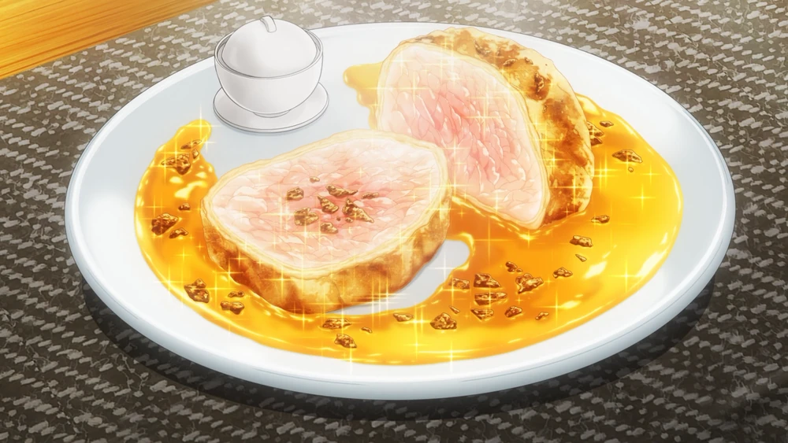

Le Plat Véritable ~Delinquent Daughter Style~

Description
It is the dish that Erina Nakiri made as a main course after Yukihira Souma's appetiser dish "Time Fuse, Brazen Youngster-Style Primeval Meat", helped spreading the delicous flavor to maximum , with the help of Soma Yukihira, to lead the Rebels into beating Central and winning the seats of the Elite Ten Council. It is essentially a dish made up of all the disgusting snacks, like squid and peanut butter, but used to make a delicious dish. She also used the furikage seasoning from Season 1 that Soma used to get into Totsuki.
Ingredients
- Skin
- Croûte
- Bread
- Pie
- Finely Minced Squid Tentacle
- Peanut Butter
- Scrambled Eggs
- Fresh Cream
- Salt
- Black Pepper
- Turmeric
- Boiled Rice
- Sesame Oil
- Salt
- Spear Squid
- Slowly Braised High-Grade Free-Range Chicken Breast
- (TBA)
Steps
- Mix eggs, fresh cream, salt and butter.
- Stir the mixture in hot water until it has a thick texture and a bright yellow corlor like turmeric powder.
- Bake boiled rice with liquid in a thin layer of sesame oil to make crispy crackers.
- Mix bread crust with finely chooped squid tentacle and peanut butter, and swap the mixture around the chicken.